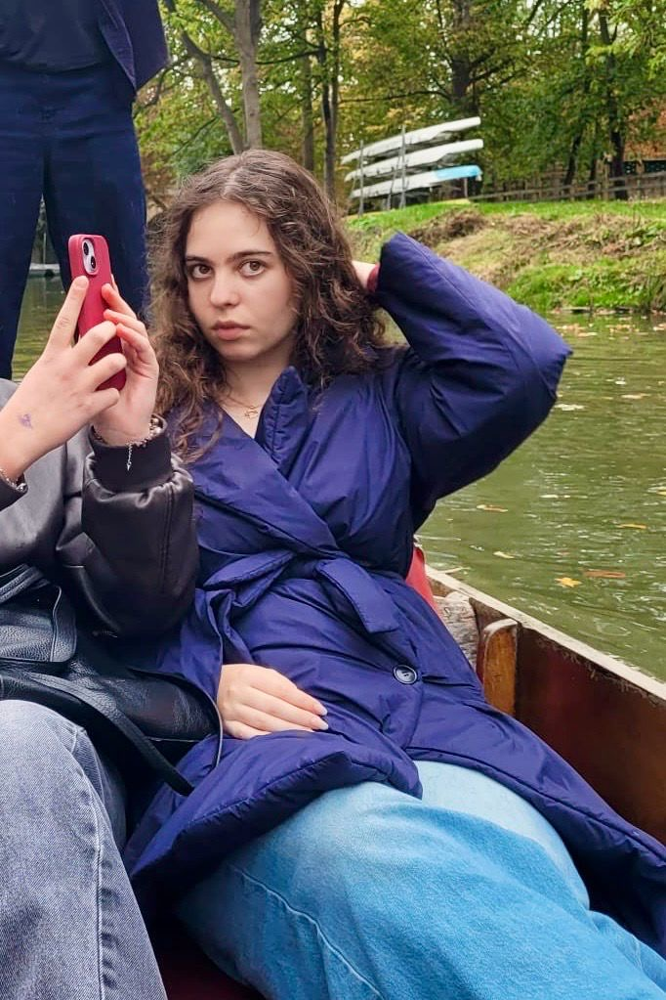

About the artist
Clara is a digital artist whose work is driven by imagination and creativity. She creates when inspiration strikes, often starting with a single idea that she transforms into a unique piece of art. Her drawings are her way of exploring ideas and turning them into something real. Clara’s art doesn’t follow a specific style or theme, it always depends on the idea behind it. Every piece begins with an idea that she simply wants to bring to life. She enjoys experimenting with new techniques and letting each drawing develop naturally. For Clara, making art is both a way to relax and a way to explore her creativity. Every piece is shaped by whatever caught her imagination at the time. What begins as a simple idea turns into something beautiful. She knows she’s still learning and improving with every piece, and she plans to keep creating until she’s really good.
